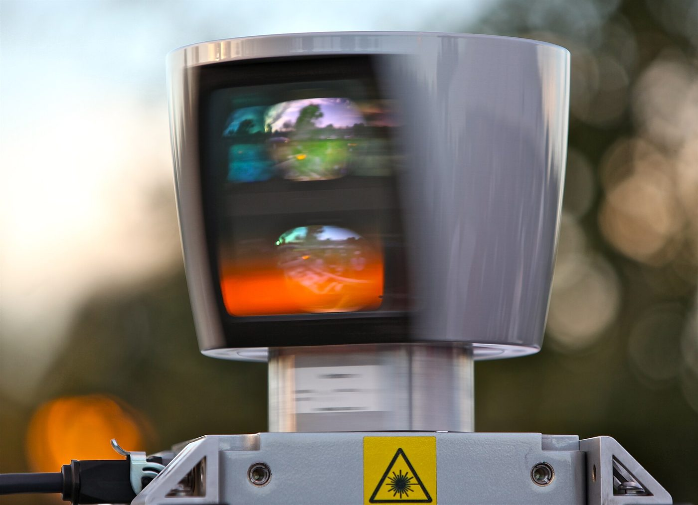
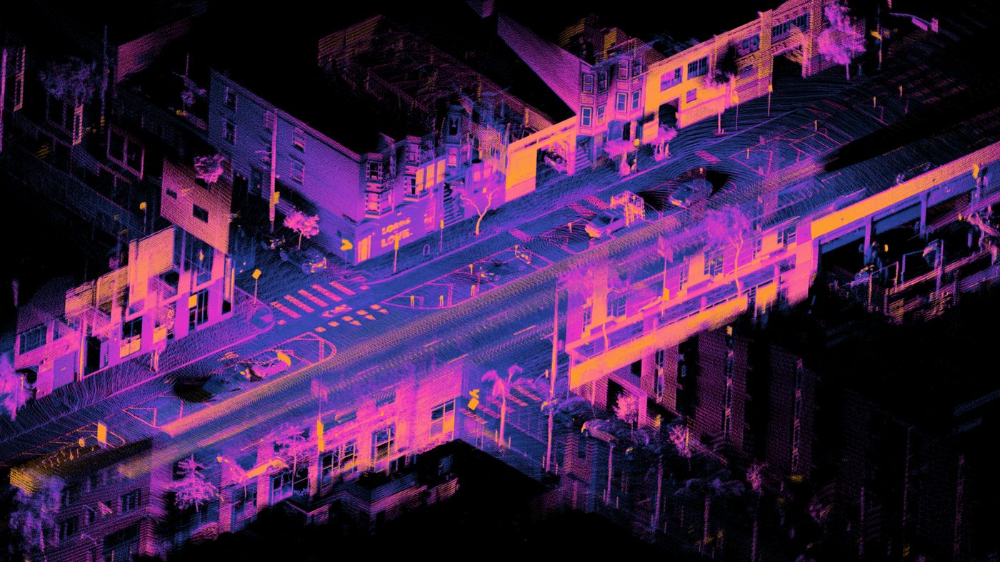

Sensing
A LiDAR spins a laser and times each bounce, giving a ring of distances. Cameras, sonar, and depth sensors do similar jobs.
Every reading is a little wrong. Noise is normal, not a bug.
Engineering · Robot Autonomy · Perception
A robot dropped into a new building knows nothing: not where the walls are, and not where it is. Every self-driving car, warehouse robot, and robot vacuum has to answer two questions at once — what does the world look like? and where am I in it? Build a map from laser scans, watch small wheel errors wreck it, then use a cloud of guesses to find a lost robot.
← Back to EngineeringThe big idea
If a robot had a perfect map, it could figure out where it is by comparing what its sensors see against the map. That is localization. If it knew exactly where it was at every moment, it could build a map by recording what its sensors see from each spot. That is mapping. In an unknown place it has neither — so it must do both at once. Engineers call that SLAM: Simultaneous Localization And Mapping.
A LiDAR spins a laser and times each bounce, giving a ring of distances. Cameras, sonar, and depth sensors do similar jobs.
Every reading is a little wrong. Noise is normal, not a bug.
Odometry counts wheel turns (encoders) and measures turning (a gyro) to estimate how far the robot moved.
Tiny errors add up. After a few laps, the robot's belief can be meters off.
An occupancy grid splits the floor into cells. Each cell stores the probability it is blocked, starting at "no idea."
This grid is exactly what a planner like A* searches.
Sim 1 · Occupancy grid mapping
The robot wanders and scans ten times a second. Along each laser ray, cells the beam passed through get a vote for "free"; the cell where it stopped gets a vote for "wall." Votes add up, so one noisy reading can't ruin the map — but many consistent readings make a cell nearly certain. Click anywhere to send the robot there.
Drop the beams to 4. How long does the map take now? Then crank the noise to 25. Do the walls get fuzzier or just slower to appear?
Turn on drifting odometry. The orange robot is where the robot believes it is. Its map is drawn from that belief — watch the walls double and smear.
The laser readings were fine in both runs. Why did the map still break? What would the robot need to notice to fix itself?
Sim 2 · Particle filter
Now flip the problem: the robot has the map but has no idea where it is. A particle filter scatters hundreds of guesses (red dots) across the map. Each cycle it does three things:
Survival of the fittest guess. The yellow robot appears once the cloud agrees.
Small σ trusts the laser completely; big σ shrugs at mismatches.
Early on, the cloud often splits into two or three clumps. Those are places that look the same to the laser. Which rooms in the map are twins?
Press Kidnap robot with random guesses on, then again with them off. Why can't a filter with no fresh guesses recover?
Set σ to 4. The cloud collapses fast — sometimes onto the wrong spot. Overconfidence is a real engineering failure.
Putting it together
Sim 1 showed that mapping with a drifting position ruins the map. Sim 2 showed that matching scans to a map fixes the position. SLAM does both in a loop: it uses the map-so-far to correct its position, then uses the corrected position to extend the map.
Slide the new scan around until it lines up with the map built so far. The shift needed is the odometry error — subtract it.
When the robot returns somewhere it has been and recognizes it, it knows its whole path must bend to meet up. The entire map snaps straight.
Robot vacuums (LiDAR on top), Mars rovers, VR headsets tracking your room, phone AR apps, and self-driving cars all run some form of SLAM.
Next → Sensor Fusion: combine noisy wheels, gyros, and accelerometers into one good estimate
Where you’ll see it
Click any photo to enlarge it.




Robot autonomy series
Quick check
1. Why is SLAM called a chicken-and-egg problem?
2. A laser beam travels 3 m before hitting a wall. What do the cells along the first 3 m get?
3. Why does odometry drift get worse over time?
4. In a particle filter, which guesses get copied most during resampling?